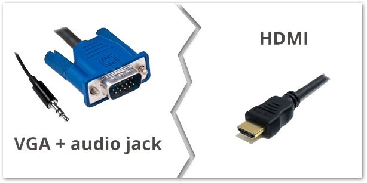

Dotykové panely¶
Návod platí pro učebny:
- B2.13, B2. 23, B2.33, B2.44, B2.43, B2.34, B2.24,
- C34,
- D21, D31, D41,
- G22.
Automatizované nahrávání je dostupné ve většině rekonstruovaných učeben FF. Některé učebny jsou řešeny nahráváním pomocí tlačítkových panelů, jiné pomocí dotykových panelů. Oboje zařízení pak uživateli dovoluje jednoduše a pohodlně nahrávat svou přednášku, včetně materiálů promítaných na plátně. Je však možné nahrát přednášku i bez těchto materiálů. Tento návod se věnuje učebnám s dotykovými panely.
Pozor! Před pořízením záznamu vždy zkontrolujte funkčnost zařízení pomocí ikony OBS Studio na ploše počítače. Podrobnější popis najdete v sekci věnované kontrole funkčnosti.
Zapnutí systému a popis ovládacího panelu¶
Dotykový panel je umístěn na katedře. Pokud je systém projektorů vypnutý, uvidíte na něm tuto hlášku:

Pozor! Zapínání systému trvá několik minut. Projektory jsou však nyní běžně užívány ve výuce, proto většinou bývá systém v chodu nepřetržitě a není třeba jej zapínat a vypínat.
V některých větších učebnách, jako je např. B2.13, je k dispozici výběr ze dvou modů – jednoduchá projekce (tzv. kino projekce) a dvojitá projekce, viz obrázek 2. V těchto učebnách jsou tři projektory, v případě jednoduché projekce je spuštěn jeden uprostřed a zabírá celý promítací prostor. V případě dvojité projekce jsou pak spuštěny dva krajní a plocha je pak rozdělena a na každé z nich může být jiný zdroj.
Pozor! Při dvojité projekci se nahrává pouze jeden vstup, a to ten, pod kterým je na panelu umístěno tlačítko “Spustit záznam”.
Popis tlačítkového panelu¶
Na dotykovém panelu můžete vidět tyto volby (obrázek je z dvojité projekce, jednoduchá projekce je pak prosta pravé strany).

- Tlačítko k vypnutí promítacího systému.
- Snížení a zvýšení hlasitosti. Pokud chcete změnit hlasitost, musíte dlouze podržet ikonu s reproduktorem + pro zesílení a s - pro zeslabení.
- Tímto tlačítkem vypínáte zvuk.
- Podrobnější nastavení zvuku.
- Umožňuje zmrazit, ztmavit nebo vypnout obraz z projektoru, aby
ostatní neviděli, co právě děláte (např. při vyplňování
přihlašovacích údajů).
- Zmrazit – promítaný obraz se zmrazí v daný moment, kdy stisknete tlačítko.
- Ztmavit – promítaný obraz se ztmaví.
- Vypnout – promítaný obraz se vypne (ale nevypne se promítací systém).
- Zde si vybíráte vstup, ze kterého budou do promítací plochy proudit informace. Bližší popis viz níže.
- Zde spustíte nahrávání záznamu.
- Zde můžete vypnout světla, aniž byste museli odbíhat od katedry.
Ovládání záznamového zařízení¶
Při používání zařízení pro automatizovaný záznam postupujte následujícím způsobem:
- Přihlaste se k počítači v učebně. Tlačítko “Spustit záznam” se aktivuje.
- Zapněte projektor a zvolte zdroj obrazu (viz níže).
- Stiskněte “Spustit záznam”. Tlačítko se rozsvítí červeně na znamení, že probíhá nahrávání. Pozor! Zpracovány jsou pouze nahrávky, které trvají déle než jednu minutu. Kratší záznamy systém automaticky maže.
- Pro ukončení nahrávání stiskněte tlačítko “Ukončit záznam”.
- Nahrávka se automaticky zpracuje a odešle do Vaší osobní kategorie ve fakultní knihovně médií Medial. Jakmile bude video dostupné, obdržíte e-mail s odkazem.
Jak nastavit oprávnění ke zhlédnutí videa v Medialu či jak lze videa z Medialu dále šířit se dozvíte v uživatelské dokumentaci. Mějte na paměti, že video se odešle do osobní složky v Medialu tomu uživateli, který je během záznamu přihlášený na PC.
Videa z učeben v Medialu nemají vyplněné doplňující informace, doporučujeme je proto dodatečně editovat, aby je bylo možné v knihovně médií rozpoznat a dohledat.

Poznámka. Aby byl přednášející dobře slyšet, doporučujeme použít některý z mikrofonů, které jsou v každé učebně k dispozici. Více o mikrofonech se dozvíte v patřičné sekci dokumentace.
Jak záznam vypadá? Přednášejícího snímá kamera napevno umístěná v učebně. Je-li zapnutý projektor, vloží se obraz promítaný na plátno přímo do videa, aby byla zajištěna dobrá čitelnost prezentací a jiných výukových materiálů (obr. 2). Nahrávat lze i bez zapnutého projektoru, video pak bude obsahovat jen obraz z učebny.

Volba vstupu¶
Můžete si vybrat, z jakého zdroje budete promítat na plátno. Na dotykovém panelu máte několik možností: PC, VGA, HDMI, Apple TV a vizualizér. Můžete si tak vybrat podle toho, co Vám nejvíce vyhovuje a co nejvíce podporuje Vaše metody výuky.
PC – projekce z počítače v učebně¶
Projekci z počítače umístěného na katedře aktivujete stisknutím tlačítka “PC”.
VGA + HDMI – projekce z vlastního notebooku¶
Vlastní notebook můžete připojit pomocí rozhraní VGA či HDMI. Potřebné konektory naleznete v zásuvce zapuštěné v desce katedry. Po zapojení konektoru do notebooku stiskněte příslušné tlačítko na ovládacím panelu.

Rozhraní HDMI umožňuje přenášet zvuk i obraz v digitálním formátu. Kvalita obrazu je zpravidla vyšší než u VGA, ovšem při přenosu může docházet k drobným prodlevám.
Rozhraní VGA je starší analogový standard, který slouží pouze k přenosu obrazu. Pro přenos zvuku je nutné zapojit zvlášť konektor audio jack. Kvalita obrazu může být nižší než u HDMI.
Apple TV – projekce ze zařízení Apple¶
Učebny v budovách A a B2 jsou vybaveny zařízením Apple TV, které umožňuje umožňuje bezdrátový přenos obrazu ze zařízení Apple. Snadno tak můžete promítat obraz například z vlastního iPadu nebo MacBooku. Pro připojení k Apple TV postupujte následujícím způsobem:
-
Stiskněte tlačítko “Apple TV” na ovládacím panelu.
-
V ovládacím centru svého zařízení Apple stiskněte tlačítko “AirPlay”.

Obr. 7: Tlačítko AirPlay v ovládacím centru -
Zobrazí se Vám seznam dostupných zařízení, pojmenovaných podle učebny, ve které se nacházejí. Zvolte to, na které chcete obraz přenášet.

Obr. 8: Seznam dostupných Apple TV -
Zadejte kód, který se Vám zobrazí na promítací ploše, a potvrďte stisknutím “Ok”. Obě zařízení se následně spárují.

Obr. 9: Pole pro zadání kódu k Apple TV
Vizualizér – projekce z vizualizéru¶
Učebny v budovách A a B2 jsou vybaveny vizualizérem, který funguje jako kamera snímající určité místo na katedře a umožňuje tak promítat například materiály vytištěné na papíře. Vstup z vizualizéru zvolíte tlačítkem “Vizualizér”. Vizualizér je buď umístěný na kraji katedry, nebo zavěšený přímo nad katedrou. Ovládat jej lze pomocí dotykového panelu.
Nastavení vizualizéru¶
Ovládací rozhraní vizualizéru otevřete stisknutím tlačítka “Nastavení vizualizéru” (viz obr. 3). Upravovat můžete přiblížení (Zoom), zaostření a jas obrazu. Tlačítkem “Zmrazit” lze promítaný obraz zafixovat.
Kontrola funkčnosti zařízení v učebně¶
Správnou funkčnost záznamového zařízení si můžete ověřit přímo v učebně. Na ploše učitelského PC je umístěna ikona “OBS Studio”, po jejím rozkliknutí se otevře přehrávač okno s náhledem záznamu z učebny. Zde si můžete zkontrolovat, zda je obraz kamery v pořádku, zda je obraz z projektoru vložený do záznamu a také zda je zaznamenáván zvuk. Úroveň snímaného zvuku je indikována vizuálně pomocí svítícího ukazatele pod obrazem z učebny.
Pokud náhled není v pořádku, kontaktuje techniky CIT.
Náhled streamu můžete na učitelském PC otevřít kdykoliv i bez toho, abyste spouštěli samotný záznam.
FAQ¶
Co dělat, když záznam spustím nedopatřením?
Ke zpracování se odesílají pouze záznamy, které trvají déle než minutu. Pokud jste tedy záznam vypnuli dříve, nemusíte nic řešit. V opačném případě můžete počkat, až se video zpracuje, a poté jej z mediální knihovny odstranit.
Co se stane, když záznam zapomenu ukončit?
Nic se neděje, nahrávání se samo ukončí poté, co se odhlásíte z počítače nebo jej vypnete.
Tlačítko “Záznam” je zašedlé a nereaguje.
Ověřte, zda jste přihlášení na počítači v učebně.
Tlačítko “Záznam” svítí, přestože ještě nikdo není přihlášený na počítači.
Propojení s účtem zřejmě nefunguje správně a Vaše video by mohlo být přiřazeno někomu jinému. Pokud můžete, kontaktujte techniky CIT (klapka 1542). Pokud nezbývá čas a záznam nutně potřebujete, zkuste se nejprve přihlásit a znovu odhlásit a po ukončení záznamu nám napište – ověříme, že záznam skončil ve správné kategorii.
Nepřišel mi mail s informací o zpracování záznamu.
Zkuste ještě chvíli počkat, zpracování záznamu může trvat i několik hodin. Pokud mail nepřijde do druhého dne, napište nám mail a uveďte v něm, kdy a v jaké učebně jste nahrávku pořizovali.
Mohu v průběhu přednášky přepínat mezi vstupy? Odrazí se přepínání i ve výsledném záznamu?
Ano, v záznamu se vždy objeví právě ten vstup, který jste v dané chvíli v učebně používali.